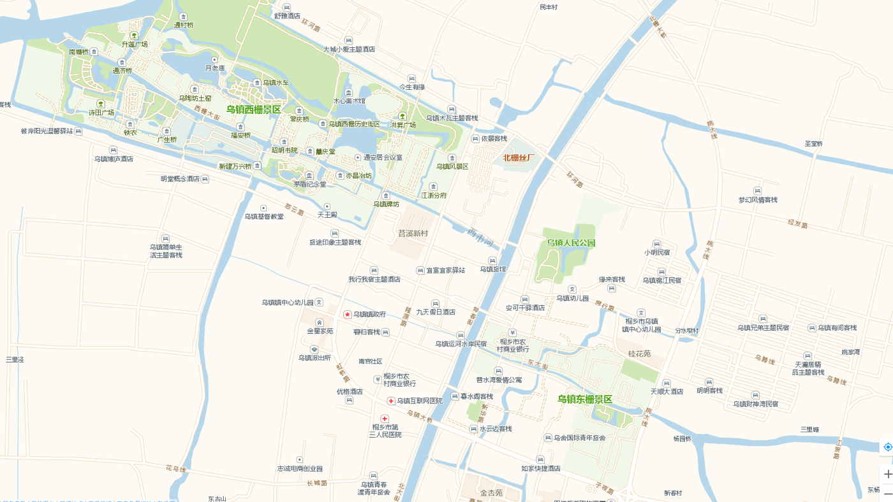

- 汽车线路
- 乌镇汽车站——桐乡火车站（K282）
- 桐乡火车站——乌镇汽车站：每天有39班 首班7:25，末班21:40
- 乌镇汽车站——桐乡火车站：每天有38班 首班6:10，末班20:35
- 注：夜班车，始发站为乌镇西栅景区（西栅出发班次为：18:15、19:00、19:50、20:35）
- 乌镇汽车站——桐乡客运中心（K231）
- 桐乡客运中心——乌镇汽车站：每天有46班 首班6:00，末班18:00
- 乌镇汽车站——桐乡客运中心：每天有46班 首班6:00，末班18:00
- 注：夜班车，始发站为乌镇凤仙新村（乌镇凤仙新村出发班次为：18:30、19:35、20:30、21:3